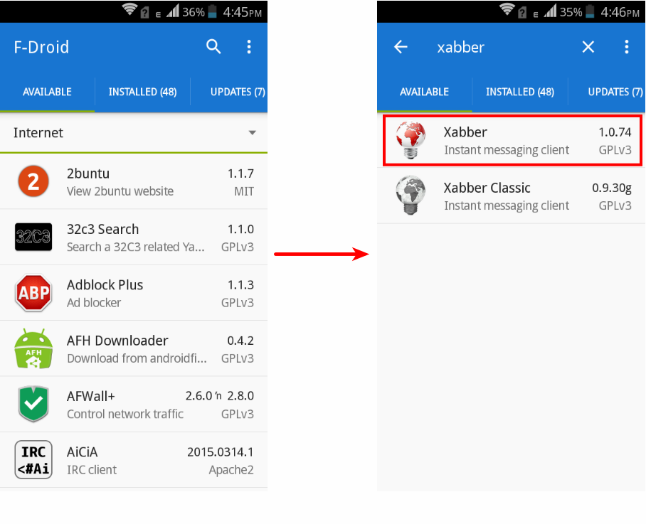
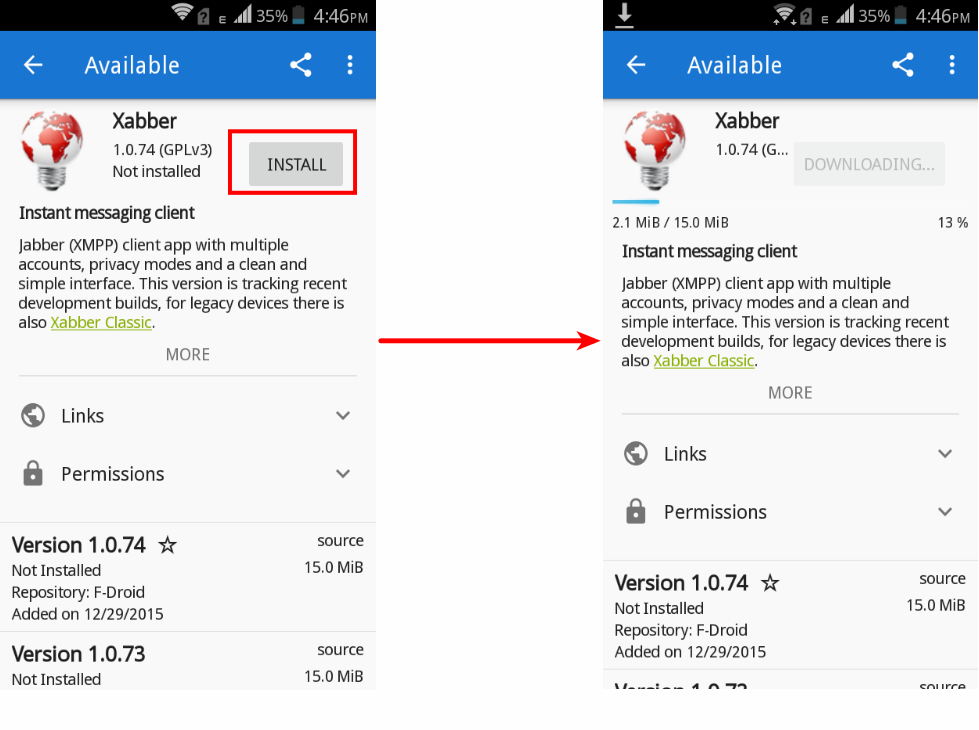
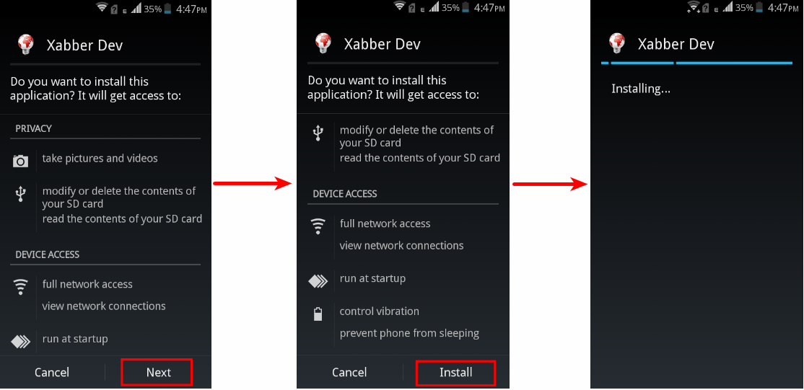
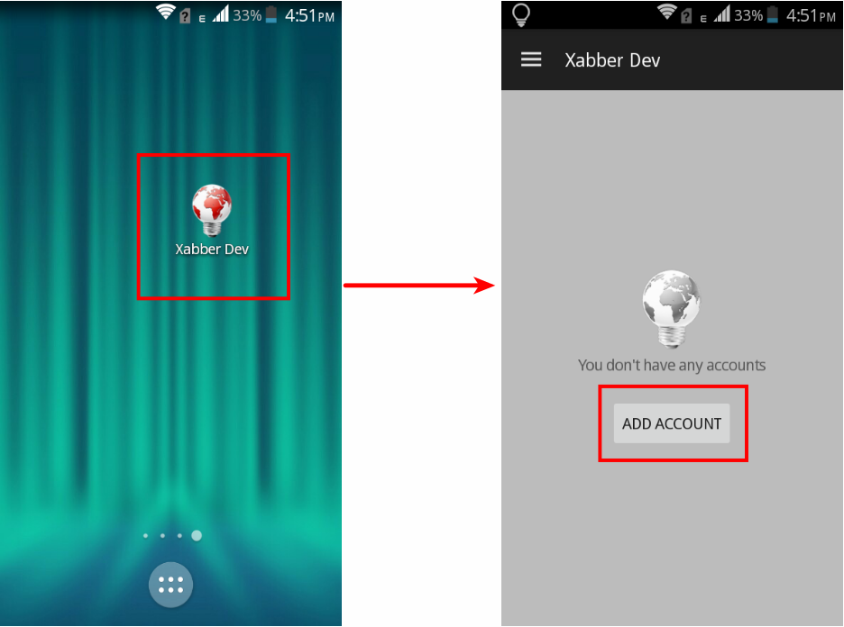
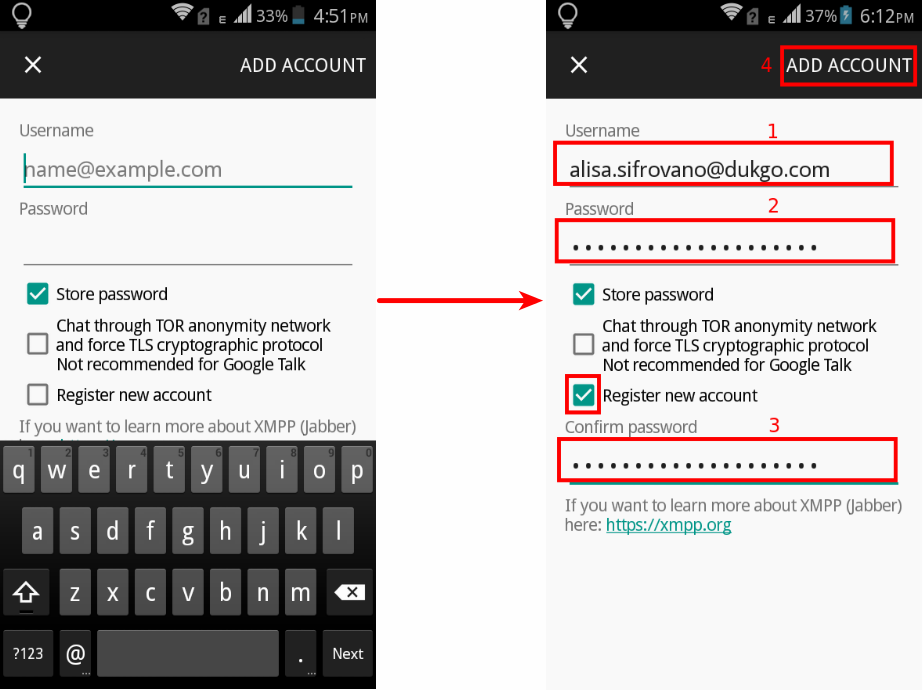
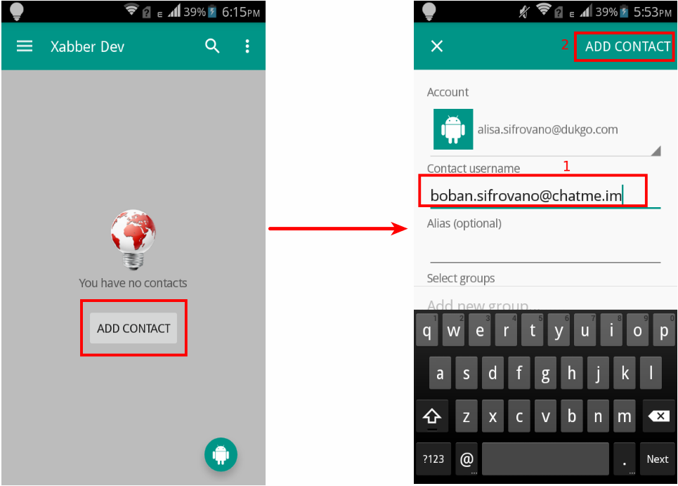
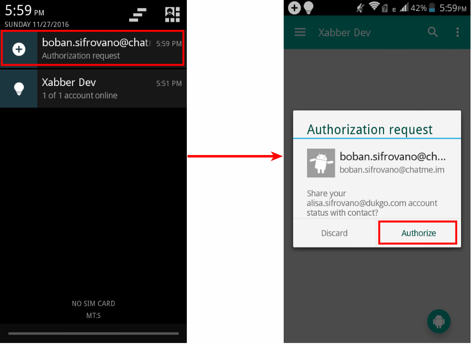
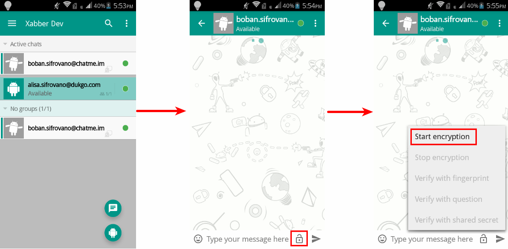
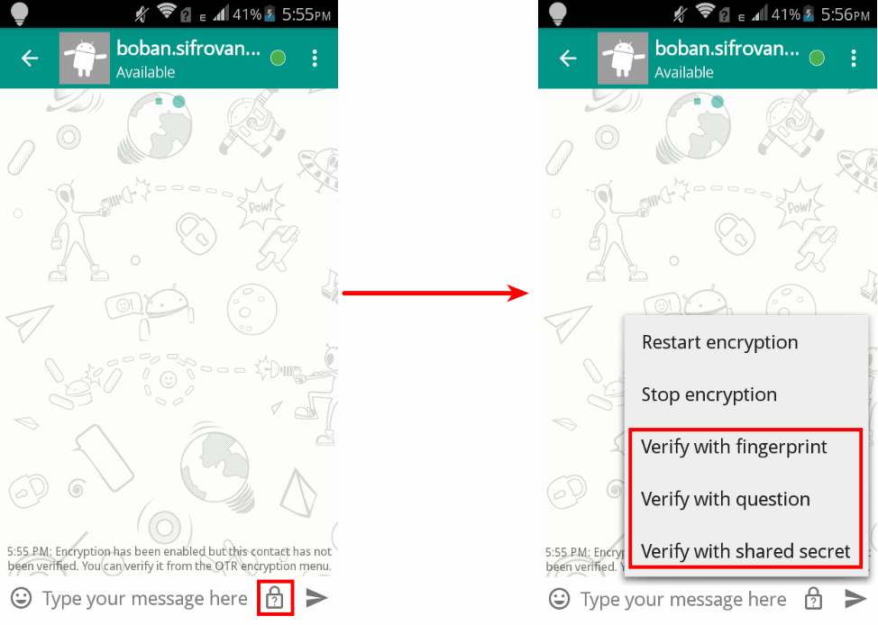
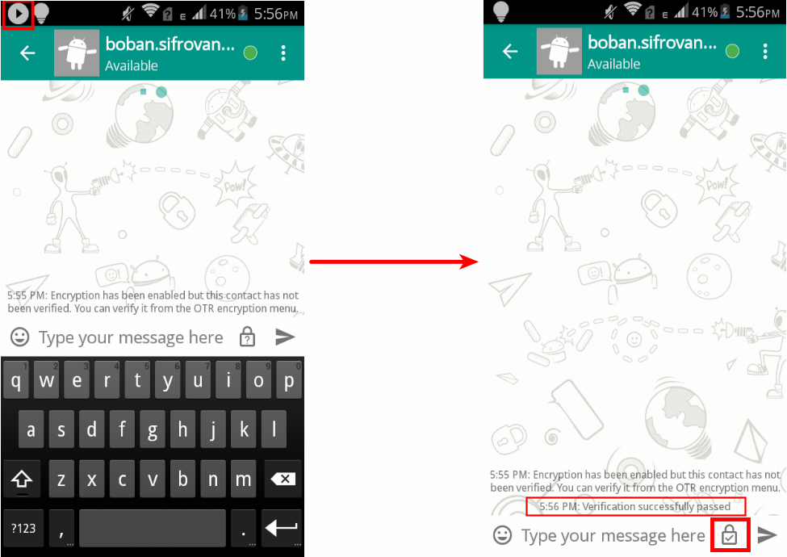

OTR protokol ne podržava grupno šifrovano dopisivanje, kao ni šifrovanu razmenu fajlova, već samo tekstualne poruke.
Međutim koristeći OTR možete se sa sagovornikom dogovoriti oko tajne šifre tokom dopisivanja, a zatim drugim programom šifrovati fajl dogovorenom šifrom pre slanja, i tek onda izvršiti slanje.
OTR protokol je nezavistan od protokola/servisa koji koristite za komunikaciju pa ćete tako moći da ga koristite za privatnu konverzaciju i preko IRC-a, Google Talk-a, Yahoo Messinger-a i drugih, dok god i vaš sagovornik koristi isti protokol, kao što se ne možete dopisivati ako koristiti Yahoo Messinger, a sagovornik IRC.
OTR funkcioniše samo ako ga koriste obe strane u komunikaciji.
3. Instalacija Xabber-a
Xabber možete preuzeti i intalirati sa GuglPlej-a (eng. Google Play) ili F-Droid-a, a mi svakako preporučujemo da to uradite sa F-Droid-a.

Figure 1: Preuzmite Pronađite Xabber na F-Droid-u.

Figure 2: I preuzmite ga.

Figure 3: Android će vas obavestiti koje privilegije će imati Xabber. Onda pritisnite "Install" da bi instalirali Xabber.

Figure 4: Kada se Xabber instalira, pokrenite ga. A zatim pritisnite digme za dodavanje novog naloga.
3. Dodavanje vašeg naloga i kontakta
Dalje je potrebno uneti vaš XMPP nalog ukoliko ga imate, ili možete čekirati kvadratić "Register new Account" kako bi sa unetim podacima registrovali na željenom XMPP serveru vaš novi nalog.

Figure 5: Unesite vaš XMPP nalog i šifru. Naš nalog je alisa.sifrovano@dukgo.com, a vi unesite vaš.
3.1 Dodavanje kontakta

Figure 6: Kada ste dodali vaš nalog, možete dodati nekog vašeg kontakta kako bi ste sa njim šifrovano ćaskali. Naš kontakt je boban.sifrovano@chatme.im, nakon dodavanja kontakta, vašem kontaktu će sti’ći obaveštenje da ga dodajete i ako vas odobri možete ćaskati.

Figure 7: Takođe se može desiti da vas neko doda za svog kontakta i u tom slučaju će vam stići obavešetenje o tome i opcija da to prihvatite ili nezavisno od toga da li znate ko je kontakt.
4. Šifrovano ćaskanje
Nakon što ste dodali kontakta za ćaskanje, mogućnost šifrovanog ćaskannja zavisi od toga da li i vaš kontakt koristi OTR.
Naime, Xabber od korisnika sakriva ove ključeve i svo šifrovanje, pa ako kontakt takođe koristi Xabber sigurno će te moći šifrovano komunicirati.
Vaš kontakt može koristiti i već pomenute druge XMPP/Jabber klijente ili desktop klijente poput Pidgin-a, Jitsi-ja ili Adium-a, ali unutar tih klijenata mora generisati svoj OTR ključ.

Figure 8: Nakon što ste dodali kontakta možete započeti konverzaciju sa njime. Ali pre nego što išta počnete kuckati klinite na otljučani katanacu donjem desnom uglu, pa "Start encryption".

Figure 9: Kada ste započeli šifrovanu konverzaciju, potrebno je da verifikujete vašeg sagovornika. To možete učiniti na tri načina pomoću: poređenja otiska, pitanja i odgovora, ili deljene tajne.

Figure 10: Tek kada i kontakt vas verifikuje (odgovori na pitanje, unese deljenu tajnu ili uporedi otisak) oboje možete biti sigurni da vodite privatnu konverzaciju koju niko ne može presresti i dešifrovati. Videćete u donjem desnom uglu zaključan i štikliran katanac.